github-skill-real-20261002-v2 · 整片节奏时间带
抽样静帧不能证明动态节奏、阅读停留和声音通过，仍需整片播放。
123 帧，199.8 秒，待视觉复核。
0.1s · clean-00.2s · clean-04.2s · clean-05.7s · clean-08.2s · github8.2s · github10.1s · github11.1s · clean-32612.2s · clean-32616.1s · clean-32617.6s · clean-32620.1s · clean-32620.4s · find22.0s · find22.9s · clean-68024.1s · clean-68028.1s · clean-68030.4s · clean-68032.1s · clean-68033.7s · repository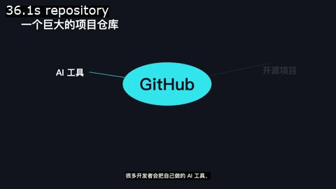
36.1s · repository 40.1s · repository
40.1s · repository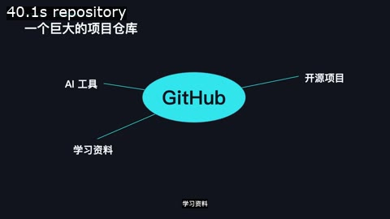
40.1s · repository42.9s · clean-128144.1s · clean-128145.4s · clean-1281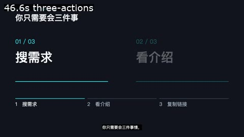
46.6s · three-actions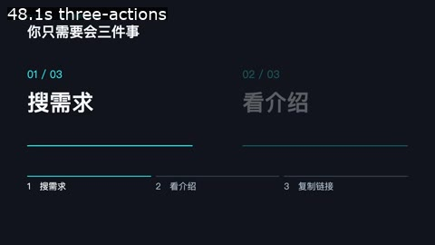
48.1s · three-actions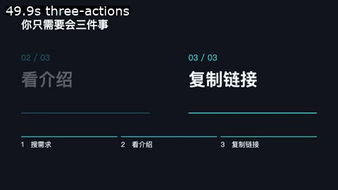
49.9s · three-actions51.4s · clean-153852.1s · clean-153852.4s · clean-153853.0s · signup56.1s · signup57.3s · signup59.2s · search-codex60.1s · search-codex63.8s · search-codex64.2s · search-codex65.9s · search-ppt68.1s · search-ppt68.2s · search-ppt69.3s · repositories72.2s · repositories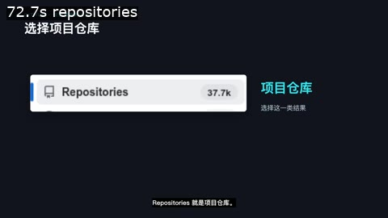
72.7s · repositories74.3s · clean-222476.2s · clean-222477.5s · clean-222479.0s · awesome80.2s · awesome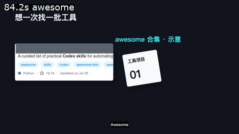
84.2s · awesome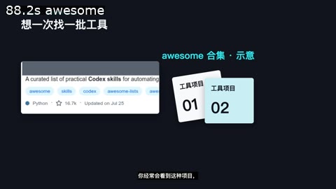
88.2s · awesome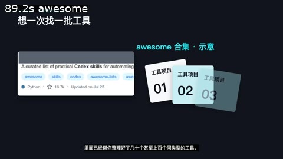
89.2s · awesome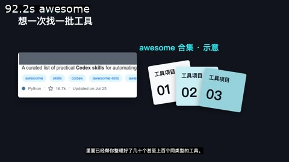
92.2s · awesome93.5s · clean-279894.7s · clean-279895.5s · stars96.2s · stars100.2s · stars104.2s · stars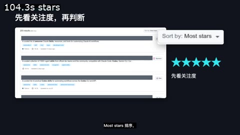
104.3s · stars108.0s · clean-3236108.2s · clean-3236108.7s · clean-3236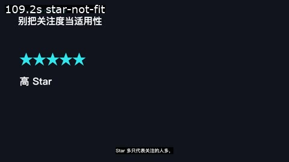
109.2s · star-not-fit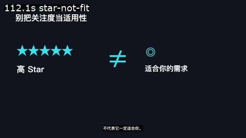
112.1s · star-not-fit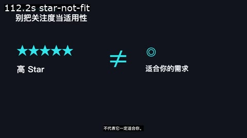
112.2s · star-not-fit113.6s · clean-3401115.7s · clean-3401116.2s · clean-3401116.9s · readme119.9s · readme120.2s · readme121.3s · clean-3635122.2s · clean-3635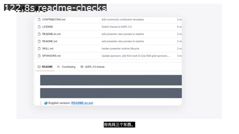
122.8s · readme-checks124.2s · readme-checks126.1s · readme-checks127.6s · clean-3823128.2s · clean-3823132.2s · clean-3823132.8s · clean-3823135.1s · copy-link136.2s · copy-link138.4s · copy-link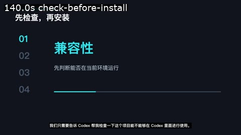
140.0s · check-before-install140.2s · check-before-install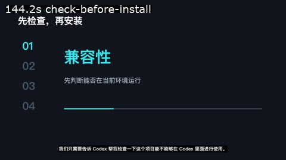
144.2s · check-before-install148.2s · check-before-install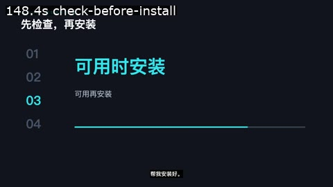
148.4s · check-before-install152.0s · clean-4554152.2s · clean-4554152.9s · clean-4554153.5s · install-not-use156.2s · install-not-use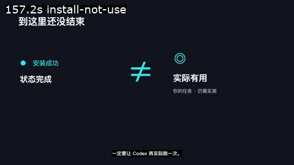
157.2s · install-not-use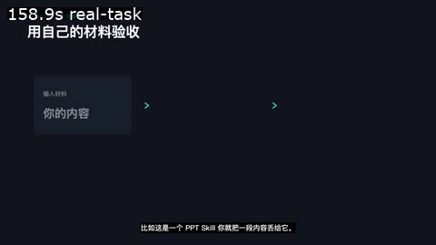
158.9s · real-task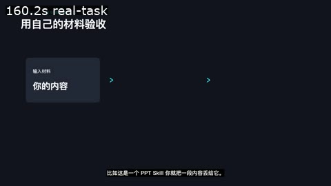
160.2s · real-task164.2s · real-task165.0s · real-task167.5s · clean-5023168.1s · clean-5023168.2s · clean-5023168.6s · acceptance170.5s · acceptance171.6s · clean-5141172.2s · clean-5141173.5s · clean-5141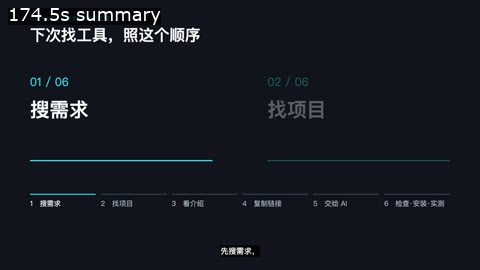
174.5s · summary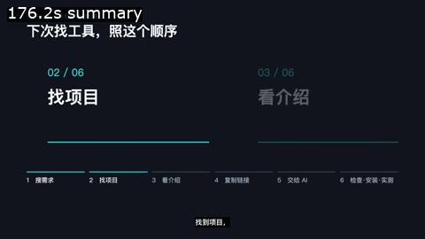
176.2s · summary180.2s · summary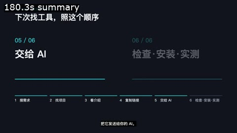
180.3s · summary182.8s · clean-outro184.2s · clean-outro188.2s · clean-outro190.1s · clean-outro192.2s · clean-outro193.2s · identity196.2s · identity197.8s · identity199.7s · clean-tail199.7s · clean-tail199.8s · clean-tail